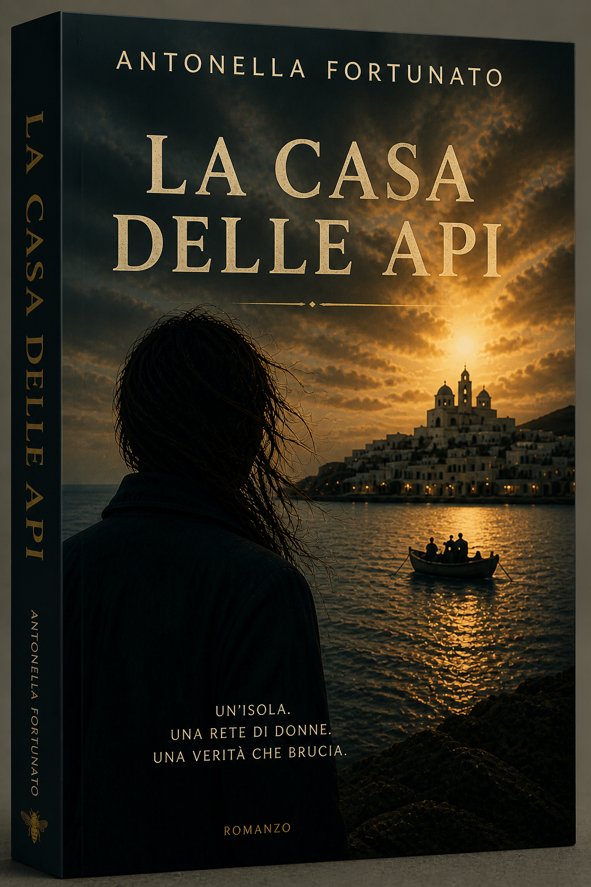

«Ogni ronzio custodisce un segreto, ogni goccia di miele è memoria liquida!»
Tra le pareti di una casa che profuma di cera e vecchi silenzi, Giulia scopre che l'eredità di sua madre non sono solo gli alveari. È una rete di donne che hanno protetto la libertà a costo della propria pelle. Una storia di formazione che brucia come il fuoco e guarisce come il miele.
«Non è il solito romanzo “sulle donne forti”. Qui senti davvero il peso delle scelte. Alcune pagine fanno male, ma in senso buono.»
— Sara P., Roma«La Casa delle Api resta addosso come il profumo della cera. Un rifugio sensoriale necessario.»
— Rivista Letteraria« Qualcosa di antico abita in questo romanzo. Come se ogni parola fosse stata lasciata lì apposta, per essere trovata al momento giusto.»
— BookBlog Italia